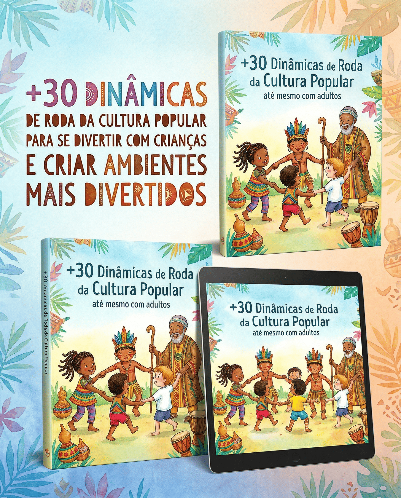

Lo que vas a encontrar
¿Qué Hay Dentro
¿Qué Hay Dentro
de la Guía?
Una enciclopedia práctica y vibrante para transformar tu aula, vivencia o fin de semana en familia.
-
33 Dinámicas con Guión Paso a Paso 4 capítulos: Danzas y Músicas de Ronda, Juegos de la Tradición, Rondas de Expresión y Sanación, y Rondas de Construcción Colectiva — cada una con 5 a 6 pasos numerados listos para aplicar
-
Contextualización Histórico-Cultural El origen de cada dinámica presentado con precisión — ej: "Costa Caribe · Afrolatinoamericana · Patrimonio UNESCO" — para que contextualices antes de aplicar
-
Variaciones para Cada Edad Desde la primera infancia (3 años) hasta grupos de adultos — cada dinámica trae adaptaciones específicas para encajar en cualquier contexto y realidad
-
Consejo del Facilitador en Cada Dinámica Una caja especial en cada actividad con el detalle práctico que transforma la dinámica en una experiencia inolvidable — el secreto de quienes ya lo hicieron
